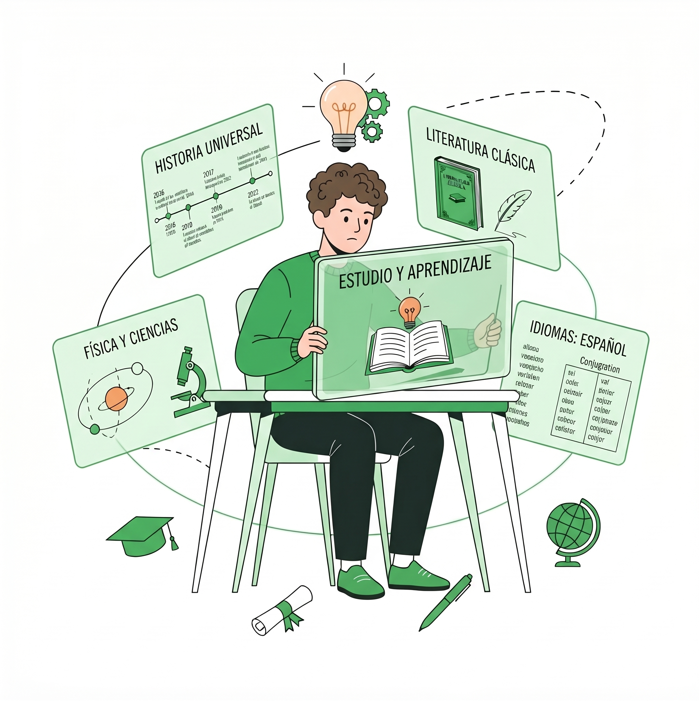

Vengo del mundo de la informática pura y la administración de sistemas: armar y desarmar computadoras, revivir hardware al límite, tender cableado de red, estructurar bases de datos en SQL y optimizar procesos organizacionales. Durante mis inicios, asumía que la misión de un técnico era simplemente lograr que los circuitos respondieran y los números cuadraran en una hoja de cálculo.
Sin embargo, al adentrarme en el trabajo diario de las instituciones educativas, mi perspectiva dio un giro radical. Me encontré con una realidad que ningún manual técnico te enseña: detrás de una computadora que no enciende, una red inestable o una plataforma trabada, no hay un simple código de error; hay un maestro angustiado frente a su clase, un alumno frustrado por no poder entregar su tarea y una familia confundida ante un trámite digital. Descubrí que puedes tener la infraestructura más rápida del mundo, pero si la tecnología intimida, genera rechazo o levanta barreras, no sirve de nada.
«Un servidor se repara con técnica; una brecha digital se transforma con pedagogía, psicología y empatía.»
Fue en ese momento donde mi interés por la pedagogía y la psicología del aprendizaje despertó con fuerza. Siempre he sentido una vocación genuina por enseñar: por sentarme junto a alguien, escuchar con paciencia sus dudas sin juzgar y traducir lo complejo a un lenguaje cercano hasta ver ese instante donde la persona pierde el miedo y toma el control de sus herramientas. Comprendí que la resistencia a la tecnología casi nunca es falta de capacidad, sino inseguridad y estrés ante lo desconocido.
Por eso, siendo técnico informático e informático administrativo, decidí enfocar mi camino hacia EdTech (Tecnología Educativa). No fue una simple elección académica, sino una necesidad vocacional: el punto exacto donde la rigurosidad analítica del soporte y los datos se fusiona con la calidez humana, asegurando que las plataformas digitales sean una ayuda transparente y los docentes puedan concentrarse en lo más importante: inspirar y enseñar.
Soporte técnico, administración de redes y resolución directa en aulas.
Diseño de sistemas enfocado en eliminar cuellos de botella administrativos.
Rigor analítico en bases de datos unido a mediación humana con alumnos y tutores.
Comprender los temores, la frustración y el contexto humano antes de intervenir la técnica o abrir un manual.

Traducir la complejidad a un lenguaje accesible, acompañar con paciencia y formar usuarios independientes.
Mi proceso paso a paso para transformar la ansiedad digital de docentes y alumnos en autonomía, confianza y dominio práctico.
Antes de abrir un manual o tocar un teclado, escucho activamente. Identifico la carga emocional y los bloqueos frente a la pantalla: el miedo a «descomponer algo», el estrés por evaluaciones o la frustración por no entender. Desmitifico la tecnología demostrando que no se necesita ser un genio informático para dominarla, creando un espacio de calma donde equivocarse es bienvenido como el primer paso para aprender.
Elimino los tecnicismos intimidantes y traduzco conceptos abstractos a metáforas cotidianas y pasos lógicos. Aplico el principio de «aprender haciendo»: nos sentamos a resolver juntos sus necesidades reales inmediatas (gestionar aulas en Moodle, estructurar calificaciones o respaldar archivos críticos). Guío el proceso sin quitarles el control, permitiendo que sean ellos quienes operen y ganen seguridad en sus propias manos.
Mi meta nunca es generar dependencia hacia el técnico, sino construir autonomía plena. Elaboro guías de apoyo sencillas «en cristiano», rutinas de prevención y pautas de seguridad digital. Convierto a docentes que antes le temían a la tecnología en usuarios seguros capaces de orientar a sus colegas, y a los estudiantes en aprendices digitales independientes para su futuro.